AquaFlow — веб-сервис для специалиста по экологическому мониторингу. По снимкам Sentinel-2 он находит зоны вероятного скопления плавающего мусора, показывает полевые измерения из реестра кейса и модельную концентрацию в шт./км² с интервалом и статусом доверия, выгружает результаты в GeoJSON, CSV и PDF и повторяет сохранённый запрос с проверкой sha256.
| Репозиторий | GitHub: github.com/Serfetto/kosmofinal · GitVerse: gitverse.ru/hackrus.experts/kosmo-moskva_aboba_40 |
| Запуск | docker compose up -d --build → http://localhost:8000 (подробно — раздел 9) |
| Проверка за минуту | python -m pipeline.verify — sha256 весов и выборок, пересчёт всех метрик из сохранённых предсказаний |
| Редакция | 26.09.2026; критерии и постановка — в редакции организаторов от 23.09.2026 |
| Раздел 1 | чек-лист по 11 критериям оценки: у каждого требования — отметка, что сделано, где лежит в репозитории и интерфейсе и как это проверить |
| Разделы 2–8 | как работает решение: данные, реестр пар, детектор, концентрация, веб-сервис, дополнительные функции |
| Раздел 9 | запуск, пересчёт метрик, тесты, ресурсы |
| Разделы 10–11 | ограничения и компромиссы; ответы на вопросы, которые возникают при разборе |
Документ написан для экспертов КосмоХакатона и для всех, кто будет проверять или развивать AquaFlow. Раздел 1 — чек-лист по критериям оценки: у каждого критерия отмечено, что сделано, где это лежит в репозитории и интерфейсе и какой командой или какими кликами это проверить. Разделы 2–10 объясняют, как работает решение, раздел 11 отвечает на вопросы, которые чаще всего возникают при разборе.
| Способ | Что даёт | С чего начать |
|---|---|---|
| Интерфейс | Карта с выбором акватории и даты, карточки зоны, гекса и полевого измерения с расчётом по шагам, выгрузка, панель «Методика» с формулами и метриками | localhost:8000/?aoi=batumi&date=2024-06-05&profile=B |
| API | 37 ручек с описанием и примерами; всё, что видно в интерфейсе, приходит из них | /api/docs (Swagger), docs/api.md |
| Команды | Пересчёт метрик из сохранённых предсказаний, сквозной пересчёт, тесты, разбор одного расчёта | python -m pipeline.verify, python -m pytest -q |
docker compose up -d --build, открыть http://localhost:8000. Снимки и модели уже лежат в репозитории, скачивать ничего не нужно.python -m pipeline.verify — все метрики детектора и концентрации пересчитаются из сохранённых эталонов и предсказаний за секунды.| ✓ выполнено | Требование закрыто, есть код, данные и способ проверки |
path/to/file | Путь от корня репозитория |
| Интерфейс → … | Где найти в веб-карте: кнопка, вкладка, карточка |
Все числа в документе взяты из файлов репозитория (docs/summary.md, data/eval/, data/models/) на момент сборки документа и совпадают с выводом python -m pipeline.verify.
Максимум — 105 баллов: 55 отраслевых (О1–О6) и 50 технических (Т1–Т5). Ниже для каждого критерия: формулировка организаторов, построчно — что сделано и где лежит, и как это проверить.
| Код | Критерий и главное доказательство | Баллы | Статус |
|---|---|---|---|
| О1 | Корректность предметной постановки. Два профиля целевой величины (пластик ≳2 см и весь мусор ≳2,5 см, шт./км²), решение по каждой из 935 строк реестра, измерения и оценки различаются в данных и на карте | 0–15 | ✓ выполнено |
| О2 | Достоверность количественных выводов. C = N/A с ДИ Гарвуда, модели A и B с формулами, отложенная выборка и вложенная CV против медианы и IDW, 80/95% интервалы, статусы применимости, проверка переноса | 0–15 | ✓ выполнено |
| О3 | Обоснованность зон. Разбор ложных срабатываний по классам фона (MARIDA, MADOS), галерея ошибок, фильтры против пены, блика, судов, облаков; разбор отбраковки по каждому снимку в интерфейсе | 0–10 | ✓ выполнено |
| О4 | Польза веб-карты. Акватория и дата, 9 показателей карты, 11 слоёв, легенда с единицами, профилем, датами, источником и версией модели, фильтры статусов, выгрузка GeoJSON/CSV/PDF | 0–5 | ✓ выполнено |
| О5 | Аргументация и защита. Отчёт с методом, вкладом, решениями, ошибками и компромиссами (docs/report.md), раздел 11 этого документа — ответы на типовые вопросы, презентация к защите | 0–5 | ✓ выполнено |
| О6 | Дополнительные функции. Прогноз дрейфа на 72 ч с проверкой на парах снимков, дрейф без снимка по реанализам, зоны схождения течений, маршрут судна, сравнение участков, тренды, PDF-отчёт, сведение модели с измерениями | 0–5 | ✓ выполнено |
| Т1 | Подготовка и синхронизация данных. Отбор в коде по configs/profiles.yaml, реестр 251 пары «событие ↔ снимок» с причинами, сдвигами, геометрией и масками качества, пересборка без сети | 0–10 | ✓ выполнено |
| Т2 | Алгоритм детектирования. P/R/F1/IoU на MARIDA test, два базовых алгоритма на той же выборке, порог зафиксирован заранее, сохранённые предсказания и эталон, проверка на сложном фоне MADOS | 0–15 | ✓ выполнено |
| Т3 | Алгоритм оценки концентрации. Код шт./км², контрольные примеры из постановки в тестах, MAE, RMSE и лог-ошибка с ДИ против базовых на тех же событиях, эталоны и предсказания в репозитории | 0–15 | ✓ выполнено |
| Т4 | Эксперименты и воспроизводимость. Веса, выборки, эталоны и предсказания в репозитории с sha256, requirements.lock, составы выборок с ID событий и сцен, тесты на утечки | 0–7 | ✓ выполнено |
| Т5 | Интеграция прототипа. Docker, сохранённый запрос с проверкой sha256, одинаковые числа в алгоритмах, интерфейсе и выгрузке (тесты), 404/422/503 вместо падений | 0–3 | ✓ выполнено |
python -m pipeline.review sample), но не размечен. Детектор проверен на MARIDA и MADOS, на наших снимках — разбором отдельных случаев.| Требование | Что сделано и где найти | |
|---|---|---|
| ✓ | Целевая величина, материал, размер, единица | Два профиля в configs/profiles.yaml. A — плавающий пластик, включая вспененный, >2 см, судовой визуальный учёт в полосе 10 м, шт./км² (S2, Саргассово море, 63 события). B — весь плавающий макромусор >2,5 см, не только пластик, шт./км² (S4, Чёрное море, 33 события). Профиль C (трал 5–50 см, S1) описан, но модель для него не строилась. Интерфейс → «Сводка» → карточка «Целевая величина»; «Методика» → «Целевая величина». |
| ✓ | Совместимость наблюдений, включения и исключения | Строка попадает в профиль, только если совпадают record_type, target_scope и measurement_profile; строки с флагом source_total_vs_object_count_conflict исключены всегда. Решение и код причины по каждой из 935 строк — data/field/selection.csv. Вошли 220 строк; исключены 362 (категория — подсовокупность), 337 (объектная запись — не метка), 16 (аэросъёмка S1 >50 см без подтверждения). Раздел 3.1. |
| ✓ | Пластик ≠ общий мусор ≠ категория ≠ предмет | Профиль B подписан «не только пластик» везде: в интерфейсе, выгрузке и отчёте. Долю пластика из публикации к событиям не применяем. S3 (Северное море, порог 2 см) в обучение B не входит — только проверка переноса. Отдельные предметы (337 строк) показаны отдельным контекстным слоем, а не как метка. Тест test_scopes_not_mixed. |
| ✓ | Ловушки данных учтены в коде | Пустое поле — «неизвестно», а не 0; переход трансекты через полночь (15 событий S1); дата без времени (S4) — интервал в сутки, а не 00:00; 4 прерванные трансекты S2 восстановлены сегментами из PANGAEA 931834. Тесты tests/test_field.py. |
| ✓ | Выводы соответствуют области применения | У каждой оценки статус: «модельная оценка» (≤60 км от обучающих событий, тот же сезон, признаки в диапазоне), «исследовательская оценка» (перенос не подтверждён, с перечнем причин) или «концентрация недоступна» (другой бассейн, пресные воды). Раздел 6.7. |
| ✓ | Измерение ≠ модельная оценка | В данных — поле value_type (measurement / model_estimate / research_estimate / unavailable). На карте: полевое измерение — полоса или кружок с белой обводкой, модельная оценка — заливка гекса, исследовательская — жёлтый пунктир, зона детекции — красный контур с площадью в м², не в шт./км². |
# заново отбирает 935 строк → data/field/selection.csv, events.csv python -m pipeline.field prepare # C = N/A, ДИ, площадь прерванной трансекты по сегментам python -m pipeline.field explain S2:MSM41_litter-T18 python -m pytest -q tests/test_field.py
Интерфейс → «Данные кейса» — источники S1–S4, сколько событий на карте и какие снимки нашлись; карточка любого измерения показывает строки реестра события и решение по ним.
| Требование | Что сделано и где найти | |
|---|---|---|
| ✓ | Концентрация в физических единицах | Полевая: C = N / A, шт./км², точный 95% ДИ Гарвуда (pipeline/measure.py). Модельная: профиль A — отрицательно-биномиальная GLM числа предметов со смещением log A; профиль B — ридж-регрессия log(C + 1). Площадь маски детектора в шт./км² не переводится. |
| ✓ | Прозрачность расчёта | Формулы с текущими коэффициентами — «Методика» и docs/models.md. В карточке гекса — «Расчёт по шагам»: признаки, подстановка, интервал. Командой: python -m pipeline.concentration explain B 39.72 43.55 2025-07-18T08:10. |
| ✓ | Независимая проверка | Разбиение по группам зависимых событий зафиксировано до экспериментов; отложенная выборка (A: 13 событий, 6 групп; B: 7 событий, 3 группы) не участвовала ни в каком выборе. Вложенная CV как честная оценка всей процедуры. Базовые — медиана и IDW на тех же событиях. 95% ДИ MAE — групповой бутстреп. |
| ✓ | Неопределённость | Сплит-конформные 80% и 95% интервалы в лог-шкале по внефолдовым остаткам; покрытие на отложенной: A — 77% и 92%, B — 71% и 86%. У полевого измерения — ДИ Гарвуда. Сведение модели с измерениями рядом сужает интервал (раздел 6.9). |
| ✓ | Ограничения переноса на другие участки | Проверено обучение на S4 → применение к S3 (Северное море): модели завышают в 6–11 раз, перенос не работает — отсюда статусы применимости. data/eval/concentration/B_transfer_predictions.csv. |
| ✓ | Ограничения переноса на спутниковые снимки | Реестр пар и эксперимент «детекции в следе ↔ полевая плотность» на 9 принятых парах: ρ = −0,23 (p = 0,56), связи нет (data/eval/transfer.json). Физическое объяснение: 1000 шт./км² по 0,01 м² — это 10 м² на км², десятая часть одного пикселя. Вывод явно записан в отчёте и в интерфейсе. |
# MAE, RMSE, лог-ошибка и 95% ДИ из A/B_predictions.csv — за секунды python -m pipeline.verify # заново: CV, вложенная CV, отложенная выборка, перенос python -m pipeline.concentration evaluate
Интерфейс → клик по любому гексу: значение, 80% и 95% интервалы, статус и его причины, «Расчёт по шагам», «Сведение с полевыми измерениями». «Методика» → «Проверка» — таблицы метрик с базовыми.
| Требование | Что сделано и где найти | |
|---|---|---|
| ✓ | Зоны соответствуют признакам скопления | Зона — связная группа пикселей, где XGBoost дал P(мусор) ≥ 0,5 и пройдены все фильтры. У зоны: площадь, эквивалентное покрытие мусором в м², число пикселей, средняя и максимальная P, условия съёмки, ближайшее полевое измерение (pipeline/aggregate.py). |
| ✓ | Различение мусора и сложного фона | Модель различает 6 групп: мусор, органика (саргассум, водоросли), суда, облака, вода (включая мутную и мелководье), пена/волны/кильватер. Фильтры: спектральный тест против пены, требование соседей, CFAR 5σ против блика и ряби, буфер 100 м от облаков, 400 м от судов, 300 м ото льда, постоянные объекты по ряду снимков, шторм ≥8 м/с и блик >30% воды. |
| ✓ | Разбор удачных и ошибочных обнаружений | Ложные срабатывания по классам фона на MARIDA test (органика 26%, прочая вода 4,3%, суда 1,6%, волны 0,9%); галерея худших FP и FN — data/eval/detector/gallery.png; разбор по патчам — errors.csv. На новых сценах MADOS: слизь 45,5%, медузы 37,6%, нефть 0,65%. Наши снимки: края облаков (Батуми T21), блик (Батуми 30.06.2024), цветение (Куйбышевское), мазут (Керчь). Разделы 5.7–5.8, docs/mados.md. |
| ✓ | Подтверждение снимками, масками, наблюдениями | Снимок, маска качества (10 причин непригодности пикселя), слой «Классы модели» до порога и фильтров, блок «Мусор, а не пена, волны или суда» с отбраковкой по каждому снимку, в карточке зоны — «Почему это мусор» по каждому фильтру. Полевые полосы DOORS на тех же снимках (акватории Батуми и S4). |
| ✓ | Границы достоверности | Зона — «вероятное скопление»; видны полосы, закрывающие ≳20–30% пикселя, а не отдельные предметы. Слизь, медузы, плавник и эмульсии спектрально похожи на мусор — в карточке зоны это написано. Проверка на регионе вне обучения: F1 от 0 до 0,91, в среднем 0,52. |
GET /api/aois/{aoi}/{date}/separation.data/eval/detector/metrics.json, errors.csv, gallery.png, mados.json, leave_region_out.json.| Требование | Что сделано и где найти | |
|---|---|---|
| ✓ | Выбор акватории и даты | Верхняя панель: список из 18 акваторий (мониторинг и районы полевых данных), даты снимков стрелками ← → или кликом по графику динамики. |
| ✓ | Сравнение показателей | «Показатель карты»: концентрация, статус, качество, покрытие, среднее, устойчивость, тренд, скопление, прогноз. Инструмент «Сравнить»: два обведённых участка — концентрация, покрытие, доля снимков с мусором, тренд. |
| ✓ | Поиск участков для обследования | «Приоритетные зоны» в «Сводке», режим «Устойчивость» (где мусор возвращается), «Маршрут» из порта с поправкой на дрейф, PDF-отчёт с координатами и ориентирами крупнейших зон. |
| ✓ | Единицы, источники, профиль, версия | Легенда: шт./км² и м²/км², размерный класс профиля, дата снимка и период измерений, источник (Sentinel-2 L2A, полевой реестр), версия модели и порог детектора. |
| ✓ | Качество и статус | Сведения о сцене (время пролёта, облачность, видимая вода, блик, ветер, состояние моря), слой «Маска качества», статусы детекции и концентрации, фильтры по ним. |
| ✓ | Измерения ≠ оценки; выгрузка | Разные обозначения (О1). Выгрузка зон и гексов в GeoJSON и CSV, PDF-отчёт, сохранение и повтор запроса. |
Раздел 7.1 — сценарий по скриншотам. Открыть http://localhost:8000/?aoi=sochi&date=2026-09-11&profile=B, пройти: «Сводка» → зона из «Приоритетных» → «Зоны CSV» → «Маршрут» → «Построить маршрут».
| Требование | Что сделано и где найти | |
|---|---|---|
| ✓ | Метод и ключевые решения на основе экспериментов | docs/report.md §1–8; раздел 2 и разделы 5–6 здесь. Решения опираются на эксперименты: почему концентрация не со снимка (реестр пар), почему XGBoost, а не пороги (F1 0,80 против 0,02), почему детектор не дообучен на MADOS (docs/mados.md), почему модели концентрации простые (объём данных, вложенная CV). |
| ✓ | Вклад команды | docs/report.md §10: профили и отбор по 935 строкам, реестр пар, групповое разбиение и тесты утечек, модели с интервалами и областью применимости, нормализация фона и фильтры, проверка MADOS, статусы и маска качества, веб-карта, проверка дрейфа. |
| ✓ | Ошибки, компромиссы, ограничения, развитие | docs/report.md §9, §11; разделы 10 и 11 здесь. |
| ✓ | Презентация | Презентация к защите; план слайдов с цифрами и картинками — docs/slides.md. |
| Функция | Потребность, связь со сценарием, подтверждение | |
|---|---|---|
| ✓ | Прогноз дрейфа на 72 ч | Куда унесёт найденное скопление к выходу судна. Лагранжев ансамбль: течения SMOC + 1–3% ветра ERA5, выброс на берег. Проверен без будущих данных на 7 парах соседних снимков: медиана расстояния до новых детекций 3,0 км против 1,4 км у гипотезы «пятно на месте» — поэтому прогноз помечен как справочный (data/eval/drift_check.json). |
| ✓ | Дрейф без снимка | Для полевых событий 2014–2016 гг. (S1–S3), над которыми снимков нет: реанализы Copernicus Marine (GLORYS12, NWS, волны, ветер). Кнопка «Рассчитать дрейф на 72 ч» в карточке измерения, GET /api/drift. |
| ✓ | Маршрут обследования | Куда отправить судно для подтверждения: остановки у крупнейших скоплений с поправкой на дрейф к моменту прибытия, длина маршрута, время, доля покрытия. |
| ✓ | Зоны схождения течений | Показатель «Скопление»: во сколько раз вырастет плотность равномерно засеянных частиц за 72 ч — где течения собирают мусор. |
| ✓ | Анализ во времени и сравнение | Показатели «Среднее», «Устойчивость», «Тренд» по ряду снимков; инструмент «Сравнить» для двух участков. |
| ✓ | Сведение модели с измерениями | Регрессионный кригинг остатков: рядом с полевым измерением оценка опирается на него. На отложенной выборке B с соседями MAE 185 против 231 у модели (раздел 6.9). |
| ✓ | PDF-отчёт по снимку | Для выхода в море: карта районов скопления, таблица зон с координатами и ориентирами, графики, методика. GET /api/report. |
Раздел 8. Прогнозы на карте всегда подписаны «Прогноз, не наблюдение» и рисуются отдельным цветом.
| Требование | Что сделано и где найти | |
|---|---|---|
| ✓ | Отбор наблюдений в коде, параметры в конфигурации | pipeline/field.py по configs/profiles.yaml: тип записи, совокупность, протокол (материал и порог размера), исключающие флаги. Перед обработкой — проверка контракта реестра (935 строк, 56 полей, 318 событий, уникальный sample_id). |
| ✓ | Единицы, координаты, геометрия | C пересчитывается как N / A и сверяется с опубликованной (расхождение >1% останавливает обработку). Геометрия: 183 полосы, 4 прерванные трансекты сегментами, 33 точки S4 с радиусом 3 км. Все координаты — WGS 84. |
| ✓ | Отбор сцен, временные сдвиги | pipeline/pairs.py по configs/pairs.yaml: Sentinel-2 L2A из STAC Planetary Computer, окно ±1 сут., сдвиг хранится интервалом [dt_min, dt_max]; ярусы синхронизации: A ≤3 ч, B ≤18 ч, иначе «недостоверная синхронизация». Дрейфовый буфер = max|dt| × (0,3 м/с + 2% ветра ERA5). |
| ✓ | Маски качества | По следу события с буфером, а не по центральному пикселю: покрытие ≥90%, доля чистой воды по SCL ≥50%, медиана B11 по воде ≤0,03 (иначе блик). Пригодность пикселя и принадлежность классу мусора проверяются раздельно. |
| ✓ | Реестр принятых и отклонённых пар | data/registry/pairs.csv: 251 строка по 220 событиям и 89 сценам-кандидатам. В строке: pair_id, event_id, sample_ids, источник, scene_id, время съёмки, сдвиги, ярус, буфер, footprint_wkt, покрытие, доля чистой воды, облака, суша, блик, решение, код и текст причины, хеш конфига. Отдельно фиксируются NO_SCENE, INSUFFICIENT_COVERAGE, UNUSABLE_PIXELS, UNRELIABLE_SYNC (приложение Б). |
| ✓ | Повторный запуск согласован с исходными данными | Ответы STAC и измерения качества кешируются в data/registry/cache/: python -m pipeline.pairs build --offline пересобирает тот же реестр без сети; sha256 pairs.csv и selection.csv — в data/models/MANIFEST.json. |
python -m pipeline.field prepare && python -m pipeline.pairs build --offline
# пусто — реестр воспроизвёлся
git diff --stat data/field data/registry
curl "http://localhost:8000/api/pairs?format=csv"
| Требование | Что сделано и где найти | |
|---|---|---|
| ✓ | Запускаемый алгоритм, зоны и маски | python -m pipeline.build run: снимок → признаки → XGBoost → фильтры → маска детекций, зоны-полигоны, гексы H3, маска качества. Код — pipeline/detect.py, pipeline/aggregate.py; веса — data/models/xgb.joblib. |
| ✓ | P, R, F1, IoU на размеченной выборке | MARIDA test, 15 сцен, 359 патчей: P 0,778, R 0,829, F1 0,803 (95% ДИ по сценам 0,72–0,88), IoU 0,671. Положительный класс — MARIDA «Marine Debris» (мусор любого материала), фон — классы 2–15, неразмеченные пиксели игнорируются. |
| ✓ | Базовый и основной на одной выборке | Пороги FDI и NDVI (F1 0,022) и наивный Байес на FDI+NDVI, как у Biermann et al. 2020 (F1 0,041), на тех же 359 патчах. Пороги базовых подобраны на val. |
| ✓ | Порог и настройки зафиксированы | p_det: 0.5 и все пороги фильтров — в configs/detector.yaml; порог задан до проверки на test (оптимум на val был 0,64). Тест test_detector_threshold_fixed_before_test. |
| ✓ | Сохранённые предсказания, ошибки, сложный фон | data/eval/detector/pred_test.npz (предсказания) и ref_test.npz (эталон), errors.csv по патчам, gallery.png, FP по классам фона; внешняя проверка на 27 новых сценах MADOS test (mados.json), проверка на исключённом регионе (leave_region_out.json). |
# TP/FP/FN, P, R, F1, IoU заново из pred_test.npz и ref_test.npz — MARIDA не нужна python -m pipeline.verify # полный пересчёт с базовыми (нужна MARIDA в data/raw/marida) python -m pipeline.eval_detector
| Требование | Что сделано и где найти | |
|---|---|---|
| ✓ | Код шт./км² для профиля | pipeline/measure.py (C = N/A, ДИ, агрегация ΣN/ΣA), pipeline/concentration.py (модели A и B, интервалы, статусы). |
| ✓ | Контрольные примеры | tests/test_measure.py: 12 предметов на 0,20 км² → 60 шт./км²; оценка 75 → абсолютная ошибка 15; площадь полосы 19,68 км × 10 м = 0,1968 км²; реальные строки S2 T1 и T4; ДИ Гарвуда для N = 4 на 0,2 км² — 5,45–51,2; агрегация участков — ΣN/ΣA, а не среднее концентраций. |
| ✓ | MAE и дополнительная метрика против базового | MAE, RMSE и ошибка в лог-шкале |ln(Ĉ+1) − ln(C+1)| для основной модели, медианы и IDW на одних и тех же событиях: CV, вложенная CV, отложенная выборка, перенос. MAPE не используется. Таблицы — раздел 6.5. |
| ✓ | Эталоны и предсказания доступны | data/eval/concentration/A_predictions.csv, B_predictions.csv (y_true, pred_<модель>, часть выборки), B_transfer_predictions.csv. |
| ✓ | Площадь маски не заменяет концентрацию | Покрытие детектора (м², м²/км²) — отдельный вспомогательный показатель, в шт./км² не переводится. Тест test_mask_share_is_not_concentration. |
| ✓ | Перенос на снимки — воспроизводимым экспериментом | python -m pipeline.pairs transfer → data/eval/transfer.json: перенос не подтверждён, и сервис его не заявляет. |
python -m pytest -q tests/test_measure.py tests/test_metrics.py
# таблица MAE / RMSE / лог-ошибка с ДИ для основной и базовых
python -m pipeline.verify
| Требование | Что сделано и где найти | |
|---|---|---|
| ✓ | Выборки, эталоны, веса в репозитории | Полевые эталоны (data/field/events.csv), эталон и предсказания MARIDA test (ref_test.npz, pred_test.npz), веса xgb.joblib, conc_A/B.json, fusion_A/B.json. sha256 всех — data/models/MANIFEST.json. |
| ✓ | Версии и конфигурации | requirements.lock (точные версии, на которых получены метрики), configs/*.yaml; в каждом файле метрик и модели — коммит, хеши конфигов, версии пакетов. |
| ✓ | Команды и ресурсы | README → «Воспроизведение результатов»; раздел 9 здесь. Сервис ~1 ГБ RAM; pipeline.reproduce — 4 ГБ, несколько минут на CPU; полный пересчёт снимков — ~17 ГБ, ~45 мин на GPU, 16 ГБ RAM. |
| ✓ | Составы выборок с ID событий и сцен | data/splits/A.csv, B.csv (событие, строка реестра, группа, фолд, отложено ли), A_links.csv, B_links.csv (почему события связаны), data/splits/marida/{train,val,test}_X.txt; сцены пар — data/registry/pairs.csv. |
| ✓ | Нет пересечений и утечек | Группа = связная компонента событий одного дня рейса, ближе 30 км и 3 сут. или с общей сценой; группа целиком в обучении или в отложенной выборке. Запрещённые предикторы (items_count, parent_*, reported_*, волнение, судовой ветер…) — в конфиге. Тесты tests/test_leakage.py, tests/test_metrics.py. |
python -m pipeline.verify # sha256 + пересчёт метрик python -m pipeline.reproduce --offline # сквозной пересчёт без сети python -m pytest -q # 125 проверок
| Требование | Что сделано и где найти | |
|---|---|---|
| ✓ | Запуск по инструкции | docker compose up -d --build или локально (requirements.lock, npm ci && npm run build, uvicorn backend.app:app). Проверка — GET /api/health. |
| ✓ | Сохранённый пример запроса | data/queries/0a0b3aaaf8f9.json — зоны «Батуми — Кобулети» на 05.06.2024, профиль B. Ссылка /?aoi=batumi&date=2024-06-05&profile=B&mode=conc&q=0a0b3aaaf8f9 → «Повторить»; POST /api/queries/0a0b3aaaf8f9/rerun → "match": true. |
| ✓ | Согласованность алгоритм ↔ интерфейс ↔ экспорт | Интерфейс и выгрузка читают одни и те же файлы data/web/. Тесты: test_export_matches_zones_and_units, test_zones_consistent_with_series, test_zones_flat_json, test_separation_matches_published_detections. |
| ✓ | Пустые данные, некорректные входы, ошибки | Пустой результат — пустая коллекция; неверный параметр — 422 с разбором по полям; нет объекта — 404; отказ внешнего сервиса — 503 с Retry-After. Ни одна ручка не отвечает 500 на мусорный ввод (tests/test_robustness.py). |
| ✓ | Повторный запрос — тот же результат | Одинаковый запрос выгрузки даёт побайтно одинаковый файл, sha256 в заголовке X-Result-SHA256; при расхождении ответ показывает, какой конфиг или модель изменились. Тест test_same_request_same_bytes. |
# "match": true curl -X POST http://localhost:8000/api/queries/0a0b3aaaf8f9/rerun # 404 с текстом по-русски; 422 с разбором поля date curl -i "http://localhost:8000/api/aois/sochi/2000-01-01/zones" curl -i "http://localhost:8000/api/export?aoi=sochi&date=13.09.2026"
| Требование постановки | Где выполнено | |
|---|---|---|
| ✓ | Детектирование: зоны или маски с учётом морского фона | Раздел 5; зоны, маска детекций, маска качества, слой классов модели |
| ✓ | Концентрация в шт./км² для размерного класса и области применимости, с неопределённостью | Раздел 6; профили A и B, интервалы 80/95%, статусы |
| ✓ | Веб-карта: снимки, полевые наблюдения, зоны, оценки, качество, статусы, выгрузка | Раздел 7 |
| ✓ | Проверка качества: отложенные данные, базовое решение, разбор ошибок, повторный расчёт | Разделы 5.7, 6.5, 9; pipeline.verify |
| ✓ | Подбор снимков через публичный STAC; проекция, разрешение, радиометрия, сетка каналов | Planetary Computer STAC; сетка 10 м в зоне UTM акватории; сдвиг радиометрии −1000 для обработки ≥04.00; 20 и 60 м → 10 м билинейно, SCL — ближайшим соседом (раздел 5.1) |
| ✓ | Сопоставление на уровне event_id с учётом геометрии; прерванные трансекты по первоисточникам | Разделы 3.2 и 4 |
| ✓ | Реестр кандидатов, принятых и отклонённых пар с причинами | data/registry/pairs.csv, GET /api/pairs |
| ✓ | Разбиение с учётом события, сцены, пространства и времени; порог без финальных меток | Разделы 6.2 и 5.4; tests/test_leakage.py |
| ✓ | Исключение производных от ответа предикторов | forbidden_predictors в configs/concentration.yaml; тест |
| ✓ | Отдельно указано, что проверено на полевых данных, разметке и парах | Раздел 6.10, docs/report.md §6, GET /api/metrics → validated_where |
| ✓ | Статусы «обнаружено», «не обнаружено», «недостаточно данных», «исследовательская оценка» | Все четыре, плюс «модельная оценка» и «концентрация недоступна»; приложение В |
| ✓ | Легенда: единицы, размерный класс, даты снимка и измерения, источник, версия модели, маска качества; фильтры по дате и статусу | Раздел 7.2 |
| ✓ | Выгрузка GeoJSON и CSV, повторный запуск сохранённого запроса | Раздел 7.4 |
| ✓ | Работающий прототип | Docker, раздел 9.1 |
| ✓ | Исходный код и README: окружение, версии, конфиги, команды, ресурсы, ключи без секретов | README.md, .env.example (секретов в репозитории нет) |
| ✓ | Реестр данных и пар: источники и лицензии, строки, ID, сдвиги, геометрия, маски, разбиение, причины | docs/datasets.md, configs/datasets.yaml, data/field/selection.csv, data/registry/pairs.csv, data/splits/ |
| ✓ | Результаты проверки: выборка с эталонами, веса, предсказания, базовые на том же разбиении | data/eval/, data/models/ |
| ✓ | Краткий отчёт | docs/report.md |
| ✓ | Презентация | Презентация к защите; план слайдов — docs/slides.md |
| ✓ | Демонстрация: снимок с проверкой качества, детекция, карта; концентрация по полю, отложенная проверка; сложный случай | Сценарий — раздел 7.1; сложные случаи — Батуми 30.06.2024 (блик), Керчь (мазут), раздел 5.8 |
| ✓ | Повторная проверка выбранного экспертом расчёта без изменения кода | Раздел 1.4 |
| ✓ | Сдача через GitVerse (проект до 2 ГБ — целиком) | Файлы репозитория ~71 МБ; удалённый репозиторий gitverse настроен |
Постановка требует, чтобы эксперт мог выбрать расчёт и проверить его «в пределах подготовленных данных без изменения исходного кода под конкретную точку». Для этого есть готовые входы:
| Что проверить | Команда или ручка |
|---|---|
| Полевое измерение: N, A, C, ДИ, сегменты трансекты | python -m pipeline.field explain <event_id> · GET /api/field/{event_id} · клик по полосе |
| Модельная оценка в любой точке и момент | python -m pipeline.concentration explain <A|B> <lon> <lat> <ISO-время> |
| Оценка в гексе на дату снимка: признаки, формула, интервал, статус | GET /api/aois/{aoi}/{date}/hex/{i}?profile=B (поле calc) · клик по гексу |
| Сведение модели с измерениями в точке | python -m pipeline.fusion explain B 41.60 41.62 2024-06-05T08:30 · GET /api/fusion |
| Почему пара «событие ↔ снимок» принята или отклонена | GET /api/field/{event_id} (раздел пар) · строки события в data/registry/pairs.csv · GET /api/pairs?format=csv |
| Как детектор отделил мусор от фона на снимке | GET /api/aois/{aoi}/{date}/separation · «Сводка» → «Мусор, а не пена, волны или суда» |
| Метрики детектора и концентрации | python -m pipeline.verify · GET /api/metrics |
| Воспроизводимость выгрузки | POST /api/queries, затем POST /api/queries/{id}/rerun |
Пользователь — специалист по экологическому мониторингу. Ему нужно выбрать акваторию и дату снимка, проверить найденные зоны возможного скопления, сравнить количественные оценки с полевыми измерениями, понять, насколько результату можно доверять, и выбрать участки для обследования судном или дроном.
Спутник и полевые данные отвечают на разные вопросы, и мы их не смешиваем.
| Величина | Откуда | Единица | Как показана на карте |
|---|---|---|---|
| Зона детекции | детектор по снимку Sentinel-2 | площадь зоны и покрытие, м²; м²/км² | красный контур; вдали — кружок с числом зон |
| Полевое измерение | C = N / A по полосе учёта, 95% ДИ Гарвуда | шт./км² | полоса или кружок с белой обводкой |
| Модельная оценка | модель профиля по полевым данным | шт./км² с 80/95% интервалом | заливка гекса; жёлтый пунктир — исследовательская оценка |
Почему расчёт заранее. Детекция по снимку идёт десятки секунд на дату и требует скачать ~17 ГБ снимков. Поэтому pipeline/ один раз считает зоны, гексы, статусы и концентрацию для всех дат, а сервис раздаёт готовые файлы из data/web/. Это же даёт повторяемость: выгрузка строится из тех же файлов, что и карта, и одинаковый запрос даёт одинаковые байты. Тяжёлые интерактивные расчёты (дрейф, маршрут) идут по запросу и кешируются.
18 акваторий, 198 обработанных снимков Sentinel-2 (даты, где видно ≥30% воды).
| Группа | Акватории | Концентрация |
|---|---|---|
| Мониторинг, Чёрное море | Сочи — Адлер (30 снимков), Новороссийск — Цемесская бухта (30), Керченский пролив — Анапа, разлив мазута (19) | профиль B, «исследовательская оценка»: полевых точек у побережья РФ нет |
| Проверочная | Батуми — Кобулети (3 снимка, 21.05–30.06.2024) — полевые полосы DOORS T18–T21, T26 рядом | профиль B, «модельная оценка» рядом с полосами |
| Районы полевых данных | 8 акваторий «S4 DOORS» (Мангалия, Зонгулдак, Амасра, Инеболу, Синоп, Орду, Ризе, Поти) и 2 «S3 Северное море» (Гельголанд, Германская бухта) — снимки на даты измерений ±1 сут. | S4 — профиль B; S3 — недоступна (другой бассейн) |
| Другие бассейны и пресные воды | Невская губа, Амурский залив (Владивосток), Куйбышевское водохранилище, Волгоград | недоступна; детектор работает |
Новая акватория добавляется одной командой: python -m pipeline.build add azov "Таганрогский залив" 38.6 46.9 39.3 47.3 --port 38.93,47.2 --tz 3, затем python -m pipeline.build run azov.
| Расчёт | Python 3.12; numpy, scipy, pandas; rasterio, pyproj, shapely, h3; pystac-client, planetary-computer; XGBoost (CUDA при наличии, иначе CPU), scikit-learn, statsmodels; copernicusmarine |
| Сервис | FastAPI + uvicorn; схемы ответов pydantic; OpenAPI 3.1; PDF-отчёт на matplotlib |
| Интерфейс | React + TypeScript, MapLibre GL, Chart.js, Tailwind, сборка Vite |
| Поставка | Dockerfile (двухэтапная сборка), docker-compose с томом кеша aquaflow-cache |
Реестр кейса data/field/raw/macroplastic_marine_samples.csv — 935 строк, 56 полей, 318 событий из четырёх открытых источников. «Макропластик» в нём — несколько разных величин: суммарный пластик, отдельные категории, весь мусор и отдельные предметы, измеренные разными методами и с разными порогами размера. Поэтому мы заявляем профили и не смешиваем их.
| Источник | Строк | Что внутри | Как использован |
|---|---|---|---|
| S1 · Тихий океан (Lebreton et al., 2018) | 350 | тралы 5–50 см, категории >5 см, аэросъёмка >50 см | 83 события трала — профиль C без модели; слой на карте и дрейф без снимка |
| S2 · Саргассово море, MSM41 (Gutow et al., 2021) | 330 | визуальные трансекты, пластик и EPS >2 см, N и A известны | обучение профиля A, 63 события |
| S3 · Северное море (Gutow et al., 2018) | 222 | весь мусор и категории >2 см | 41 событие — только проверка переноса профиля B |
| S4 · Чёрное море, DOORS 3 (2024) | 33 | весь мусор >2,5 см, только опубликованная плотность и середина полосы | обучение профиля B, 33 события |
Строка попадает в профиль, только если совпадают record_type, target_scope и measurement_profile (configs/profiles.yaml). В каждом профиле одна строка на событие; повтор события останавливает обработку.
| Куда попали строки | Строк |
|---|---|
| профиль A, обучение (S2, суммарный пластик >2 см) | 63 |
| профиль B, обучение (S4, весь мусор >2,5 см) | 33 |
| профиль B, проверка переноса (S3, весь мусор >2 см) | 41 |
| профиль C, без модели (S1, трал 5–50 см) | 83 |
исключены subpopulation_not_target: отдельная категория — другая целевая величина | 362 |
исключены object_context_not_label: объектная запись (положение наблюдателя, неполная выборка) | 337 |
исключены total_missing_or_conflict: суммарная аэросъёмка S1 без подтверждения, класс >50 см | 16 |
| итого | 935 |
sample_id).time_known = false.Если N и A известны (S2, S3), C считается заново и сверяется с опубликованной плотностью; расхождение больше 1% останавливает обработку. Для S4 и S1 берётся опубликованная плотность без интервала. Пример: N = 4 на 0,20 км² даёт 20 шт./км² с 95% ДИ 5,45–51,2 — интервал показывается и у измерений, не только у модели. Выход — data/field/events.csv и events.geojson (одна строка на событие с геометрией, интервалом времени, N, A, C и ДИ), итоги — data/field/summary.json.
Организаторы выдали только полевой реестр; остальные наборы мы нашли и подключили сами. Полный реестр с версиями, полями и условиями — docs/datasets.md (генерируется из configs/datasets.yaml), в интерфейсе — «Методика» → «Данные», в API — GET /api/datasets.
| Набор | Зачем | Доступ и лицензия |
|---|---|---|
| MARIDA v1.0.0 | обучение и проверка детектора: 1 381 патч, 63 сцены Sentinel-2, 15 классов | Zenodo 5151941; CC BY 4.0 |
| MADOS | проверка детектора на фоне, которого нет в MARIDA: нефть, слизь, медузы, платформы | Zenodo 10664073; CC BY 4.0 |
| PANGAEA 931834 | сегменты и время прерванных трансект S2 | CC BY 4.0; data/field/raw/ |
| Sentinel-2 L2A | снимки акваторий, реестр пар, подложка | Planetary Computer; условия Copernicus |
| Landsat C2 L2 | просмотр сцен там, где Sentinel-2 нет (S2, S3 2014); детектор не применяется — нет красного края | Planetary Computer; USGS |
| ERA5, ветер 10 м (Open-Meteo) | кандидат в признаки, статус «шторм», дрейфовый буфер, ветер в дрейфе | CC BY 4.0; лицензия Copernicus |
| Течения SMOC (Open-Meteo Marine) | дрейф от снимка, зоны скопления, маршрут, проверка дрейфа | CC BY 4.0; Copernicus Marine |
| Реанализы Copernicus Marine | дрейф без снимка (GLORYS12, NWS, волны, ветер L4) | бесплатный аккаунт; лицензия CMEMS |
| global-land-mask | расстояние до берега (признак B), суша для частиц дрейфа | MIT |
| Подложки Esri | только отображение | условия Esri |
Проверяли, но не взяли: Copernicus Data Space и Earth Search (над районом S1 сцен нет нигде), Sentinel-3 OLCI (300 м — слишком грубо для макромусора), течения Open-Meteo за 2014–2016 гг. (начинаются с 2022 г.).
В git попадает то, что нужно для запуска сервиса и проверки метрик (~71 МБ). Снимки Sentinel-2 (~17 ГБ), MARIDA и MADOS не входят — они нужны только для переобучения и полного пересчёта.
| Путь | Содержимое |
|---|---|
data/web/<aoi>/ | готовые слои карты: гексы, ряды по датам, зоны, маска качества, растры, оценки концентрации, разбор отбраковки |
data/models/ | веса и параметры моделей, MANIFEST.json с sha256 |
data/field/ | исходный реестр, отбор по строкам, события с геометрией, кеш ERA5 |
data/registry/ | реестр пар, фрагменты снимков, кеш STAC для пересборки без сети |
data/splits/ | составы обучения, фолдов CV и отложенной выборки; списки MARIDA |
data/eval/ | метрики, эталоны и предсказания: детектор, концентрация, сведение, перенос, дрейф |
data/processed/<aoi>/ | маски воды, метаданные сцен, кеш полей течений и ветра (сами снимки не хранятся) |
data/queries/ | сохранённые запросы для повтора по sha256 |
Реестр нужен, чтобы честно проверить, видит ли спутник то, что измерено в поле, и можно ли откалибровать перевод «снимок → шт./км²». Код — pipeline/pairs.py, параметры — configs/pairs.yaml, результат — data/registry/pairs.csv, сводка — data/registry/summary.json.
SENSOR_UNSUPPORTED: у Landsat нет каналов красного края (B05–B07), на которых работает детектор.UNRELIABLE_SYNC, пара остаётся как контекст.DUPLICATE_BETTER_SCENE.| Причина (строки реестра) | Строк |
|---|---|
NO_SCENE — сцен Sentinel-2 нет (S1 — открытый океан; S2 — апрель 2015, до запуска Sentinel-2A; S3 — 2014) | 162 |
UNRELIABLE_SYNC — сдвиг >18 ч (дрейф до 30–56 км) | 39 |
SENSOR_UNSUPPORTED — есть только Landsat | 23 |
ACCEPTED_UNCERTAIN_TIME — принято: S4, тот же день, время неизвестно | 9 |
INSUFFICIENT_COVERAGE — след покрыт <90% | 7 |
DUPLICATE_BETTER_SCENE | 6 |
UNUSABLE_PIXELS — чистой воды <50% | 4 |
GLINT — сильный блик | 1 |
220 событий, 89 сцен-кандидатов.
Отклонено 188, контекст 23, принято 9.
Ответы STAC и измерения качества кешируются в data/registry/cache/: python -m pipeline.pairs build --offline пересобирает реестр без сети.
По 9 принятым парам детектор прогнан по фрагментам снимков вокруг следа (~200 км² видимой воды на пару; python -m pipeline.pairs detect, затем transfer). В 7 парах из 9 в следе 0–1 пиксель детекций. В двух парах у Батуми (T20, T21, облачность тайла 31%) — 551 и 738 срабатываний, но это края и полупрозрачные облака, а не мусор. Ранговая корреляция доли детекций с полевой плотностью ρ = −0,23 (p = 0,56) — связи нет (data/eval/transfer.json).
Вывод. Рассеянный мусор с плотностью 50–1000 шт./км² при разрешении 10 м не виден. Перенос численной оценки на снимки не подтверждён, поэтому концентрация в сервисе — модель по полевым данным, а спутник показывает, где искать плотные скопления. Постановка это допускает: «допускается раздельная проверка детектора и количественной модели».
pipeline/s2.py).Главный шаг, который делает сцены MARIDA (атмосферная коррекция ACOLITE) и наши сцены (Sen2Cor) сопоставимыми. Из каждого пикселя вычитается локальный спектр окружающей воды и прибавляется эталонный спектр чистой воды MARIDA. Так уходят солнечный блик, дымка и разница атмосферной коррекции, и модель видит только отличие пикселя от воды вокруг.
Локальный фон: кандидаты в воду (NDWI > 0, FDI < 0,01, 0 < B02 < 0,25) → медиана по блокам 32×32 пикселя → второй проход убирает из фона пиксели ярче первой оценки в NIR или FDI (чтобы пятна мусора не попали в собственный фон) → пустые блоки заполняются от соседей, сглаживание 3×3 блока, билинейное растяжение. Один и тот же код (pipeline/features.py) работает при обучении и в сервисе.
20 признаков пикселя: 11 каналов после нормализации; индексы FDI (Biermann et al., 2020), FAI (Hu, 2009), NDVI, NDWI, PI, NDMI; текстура — среднее FDI в окне 3×3, стандартное отклонение FDI в окне 5×5, высокочастотная часть B08. Самые важные: PI (23%), NDVI (13%), FDI_std5 (8%), NDWI (6%), B08_hp5 (6%).
MARIDA, официальное разбиение без изменений; неразмеченные пиксели (метка 0) не участвуют ни в обучении, ни в метриках. 15 классов сведены в 6 групп:
| Группа | Классы MARIDA | Пикселей в train |
|---|---|---|
| debris (положительный класс) | Marine Debris — плавающий мусор любого материала, не только пластик | 1 943 |
| organic | Dense Sargassum, Sparse Sargassum, Natural Organic Material | 2 684 |
| ship | Ship | 3 289 |
| cloud | Clouds, Cloud Shadows | 70 970 |
| water | Marine, Sediment-Laden, Turbid, Shallow, Mixed Water | 342 108 |
| foam | Foam, Waves, Wakes | 8 418 |
| Часть MARIDA | Патчей | Сцен | Размеченных пикселей | Из них мусор | Роль |
|---|---|---|---|---|---|
| train | 694 | 36 | 429 412 | 1 943 | обучение |
| val | 328 | 12 | 213 102 | 1 075 | ранняя остановка; пороги базовых |
| test | 359 | 15 | 194 863 | 381 | только итоговые метрики |
XGBoost multi:softprob, до 1 500 деревьев, глубина 8, learning rate 0,05, подвыборка строк и признаков 0,8, ранняя остановка через 60 деревьев без улучшения mlogloss на val. На группу — не больше 250 000 пикселей (урезается только вода), вес пикселя обратен частоте группы. Вместе с моделью сохраняется спектр «плотного скопления» (средний спектр мусора с FDI ≥ 99-го перцентиля) — по нему оценивается доля покрытия пикселя.
Модель считается только по пикселям с аномалией относительно воды (ΔFDI > 0,01, ΔB08 > 0,01 или ΔB02 > 0,03) — остальное заведомо чистая вода. Пиксель становится детекцией при P(мусор) ≥ 0,5 и прохождении трёх фильтров:
| Фильтр | Правило | Против чего |
|---|---|---|
| Спектральный тест | аномалия в NIR (B08) сильнее, чем в синем (B02) | белая пена и барашки ярче в видимом диапазоне |
| Соседство | ≥ 2 соседа с P > 0,3 в окне 3×3 | одиночные «искры» — рябь и шум |
| CFAR 5σ | аномалия NIR ≥ 5σ локального шума (окно 51 пиксель) | блик и рябь поднимают порог |
Правила уровня сцены (пороги в configs/detector.yaml, не обучаются): постоянные объекты — срабатывания на ≥3 снимках ряда и ≥20% наблюдений (причалы, буи, садки, стоящие суда); ближе 400 м к судну — кильватер; ближе 300 м ко льду; ближе 100 м к облаку или тени; на сцене со штормом (ветер ERA5 ≥ 8 м/с), льдом (>0,5% акватории) или сильным бликом (>30% воды под бликом) остаются только скопления от 4 пикселей, а «не обнаружено» не выставляется. Сцена, где видно меньше 30% воды, не публикуется.
Порог P ≥ 0,5 задан до проверки на test (оптимум на val — 0,64); тест test_detector_threshold_fixed_before_test сверяет порог в метриках с конфигом.
zone_id, центр, H3-ячейка, площадь зоны, число пикселей, P средняя и максимальная, покрытие, условия съёмки, ближайшее полевое измерение и концентрация профиля в центре зоны.Маска качества (quality.png) объясняет, почему пиксель исключён или ненадёжен: 0 — пригоден, 1 — суша, 2 — нет данных, 3 — облако, 4 — тень, 5 — перистые, 6 — сильный блик, 7 — лёд, 8 — судно и кильватер, 9 — постоянный объект.
| Статус детекции | Когда ставится (гекс, зона, снимок) |
|---|---|
| обнаружено | в гексе есть хотя бы одна детекция, прошедшая все фильтры |
| не обнаружено | детекций нет, и снимок позволяет это утверждать: видно ≥ 50% воды гекса, блик не занимает половину гекса, сцена надёжна (нет шторма, льда, сильного блика) |
| недостаточно данных | облака, блик, шторм или лёд — отсутствие мусора подтвердить нельзя |
| Метод | P | R | F1 (95% ДИ по сценам) | IoU | Recall по объектам |
|---|---|---|---|---|---|
| Пороги FDI и NDVI (базовый; FDI 0,02–0,06, NDVI ≤ 0,2 подобраны на val) | 0,011 | 0,580 | 0,022 (0,01–0,08) | 0,011 | 0,61 |
| Наивный Байес на FDI+NDVI, как Biermann et al. 2020 (базовый) | 0,022 | 0,320 | 0,041 (0,01–0,29) | 0,021 | 0,34 |
| XGBoost, P ≥ 0,5 | 0,657 | 0,906 | 0,762 (0,67–0,86) | 0,615 | 0,94 |
| XGBoost + фильтры (как в сервисе) | 0,778 | 0,829 | 0,803 (0,72–0,88) | 0,671 | 0,83 |
15 сцен, 359 патчей; TP 316, FP 90, FN 65. Простые пороги не работают на сложном фоне: мутная вода и плотный саргассум дают FDI выше, чем мусор (медиана аномалии FDI 0,19 и 0,18 против 0,03), поэтому окно по FDI ловит в основном взвесь. Фильтры убирают половину ложных срабатываний XGBoost (180 → 90 пикселей) ценой 8% попаданий (345 → 316). F1 по остальным группам: вода 0,98, органика 0,98, облака 0,92, суда 0,71, пена 0,46.
| Фон, принятый за мусор (MARIDA test) | Доля класса |
|---|---|
| органика и плавник — главный источник ошибок | 26% (13 пикс.) |
| прочая вода | 4,3% |
| суда | 1,6% |
| волны | 0,9% |
| облака, вода со взвесью | <0,03% |
Разбор по каждому патчу (TP, FP, FN, класс главного ложного срабатывания) — data/eval/detector/errors.csv; предсказания и эталон для пересчёта — pred_test.npz, ref_test.npz.
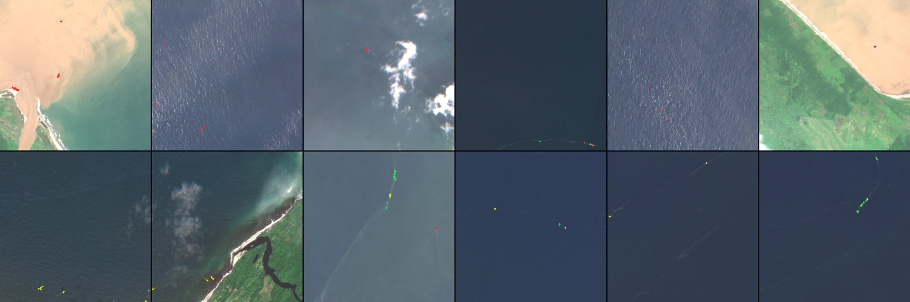
data/eval/detector/gallery.png: верхний ряд — патчи MARIDA test с наибольшим числом ложных срабатываний, нижний — с наибольшим числом пропусков. Зелёный — верная детекция, красный — ложная, жёлтый — пропуск.Официальное разбиение MARIDA не пересекается по сценам, но 6 тайлов есть и в train, и в test — оценка скорее оптимистична. Поэтому модель обучалась без целого региона и проверялась на нём (python -m pipeline.eval_detector_lro, leave_region_out.json): Карибы F1 0,91, Юго-Восточная Азия 0,85, Восточная Азия 0,61, Южная Африка 0,50, Центральная Америка 0,26, Северная Европа 0,00. Средний F1 на новом регионе — 0,52. Для Чёрного моря это значит: детектор нужно проверять на местной разметке.
MADOS — набор тех же авторов, что MARIDA. Мы проверили, что он включает MARIDA целиком (все 63 сцены, число пикселей мусора совпадает до пикселя, разбиение то же), и проверяем детектор только на 27 новых тестовых сценах (мусор в 4): P 0,193, R 0,650, F1 0,297 (0,02–0,60). За мусор принимается 45,5% пикселей морской слизи, 37,6% медуз, 4,3% редких водорослей, 3,0% судов, 0,84% нефтяных платформ, 0,65% нефтяных пятен (mados.json).
| Вариант обучения | MARIDA F1 | Полнота | MADOS F1 | Слизь | Полосы Бали из 41 | На наших снимках |
|---|---|---|---|---|---|---|
| Только MARIDA (в сервисе) | 0,803 | 0,829 | 0,297 | 45% | 40 | — |
| MARIDA + MADOS, нефть — вода | 0,809 | 0,751 | 0,579 | 4,9% | 19 | цветение в Невской губе — в 7 раз больше срабатываний |
| MARIDA + MADOS, нефть — отдельная группа | 0,804 | 0,743 | 0,577 | 5,3% | 16 | на всех снимках не проверяли |
| MARIDA + MADOS без яркой нефти | 0,826 | 0,822 | 0,481 | 6,3% | 41 | тысячи ложных срабатываний на плёнках и фронтах |
Решение: модель сервиса осталась обученной только на MARIDA. Все варианты дообучения резко снижают ложные срабатывания на слизи, но один теряет длинные полосы мусора (яркие полосы нефти в MADOS спектрально почти совпадают с полосами мусора у Бали), а лучший на тестах вариант на наших снимках отмечает плёнки, фронты и цветение. Выбрать можно только по разметке наших вод. Главный вывод: метрики на размеченных наборах не заменяют проверку на своих снимках. Подробно — docs/mados.md.
| Случай | Что происходит | Как обработано |
|---|---|---|
| Края облаков (Батуми, пара T21, облачность тайла 31%) | 766 «детекций» у мелких и полупрозрачных облаков; буфер 100 м помог мало (до 738) — полупрозрачные облака SCL не отмечает | буфер от облаков; такие сцены нужно отбраковывать по облачности тайла |
| Блик (Батуми 30.06.2024) | под бликом 27% воды, порог 30% не сработал — тысячи ложных «зон» | пример неудачной сцены; маска качества показывает блик |
| Цветение (Куйбышевское, 03.08.2025) | ~27 тыс. пикселей | пресная вода вне области применения, концентрация недоступна |
| Мазут (Керченский пролив, 2025) | детектор ищет плавающий мусор, не плёнку; класса нефти в MARIDA нет | сложный случай для разбора; слой «Классы модели» показывает, что модель видит |
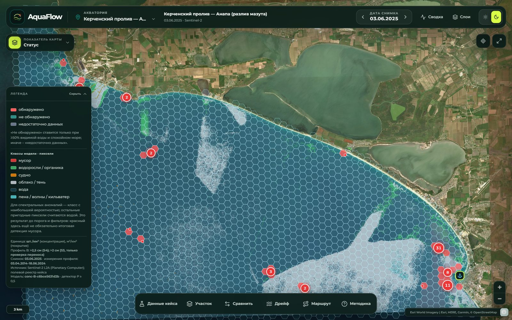
Для систематической оценки на наших водах подготовлен набор для ручной разметки: python -m pipeline.review sample — 120 зон и 60 контрольных точек, классы: скопление, пена, судно, водоросли, блик, берег и взвесь, нефтепродукты, «не ясно», «ничего нет». После разметки python -m pipeline.review score даст локальную precision с ДИ Уилсона.
| Профиль A — основной | Профиль B — региональный | |
|---|---|---|
| Величина | число плавающих предметов пластика, включая EPS, крупнее ~2 см на 1 км² | число плавающих предметов мусора всех материалов крупнее 2,5 см на 1 км² (не только пластик) |
| Эталон | S2: судовой учёт в полосе 10 м, N и A известны, 63 события | S4: опубликованная плотность, N, A и время неизвестны, 33 события |
| Модель | отрицательно-биномиальная GLM числа предметов со смещением log A | ридж-регрессия log(C + 1), α = 1 |
| Признаки | широта, долгота | log(1 + расстояние до берега) |
| Бассейн | nw_atlantic_subtropical | black_sea |
Разбиение зафиксировано до экспериментов (pipeline/splits.py, seed 20260925). Строки одного события уже сведены в одну запись, но и разные события бывают зависимы. Два события попадают в одну группу, если это один день одного рейса, или они ближе 30 км и не дальше 3 суток друг от друга, или им сопоставлена одна сцена в реестре пар. Группа — связная компонента по этим связям. Около 20% событий целыми группами уходят в отложенную выборку, остальные группы раскладываются по 5 фолдам CV.
| Профиль | Событий | Обучение | Отложено | Файлы |
|---|---|---|---|---|
| A | 63 | 50 (19 групп) | 13 (6 групп) | data/splits/A.csv, A_links.csv |
| B | 33 | 26 (7 групп) | 7 (3 группы) | data/splits/B.csv, B_links.csv |
Только то, что есть при применении. Модель потом считает концентрацию для гексов и зон на снимке, поэтому признаки — координаты, расстояние до берега (global-land-mask, сетка 1/60°) и средний ветер ERA5 на 10 м за 24 ч до момента оценки. Всё, что производно от ответа или наблюдалось на борту, запрещено: концентрации, items_count, density_numerator_items, source_object_filtered_items, reported_*, parent_*, волнение по Бофорту, судовой ветер, плотность саргассума (forbidden_predictors, 25 полей). Тесты tests/test_leakage.py: группа целиком по одну сторону, события одного дня в одной группе, модель сервиса обучена без отложенных событий.
Кандидаты заданы заранее в configs/concentration.yaml; набор выбирается по MAE на групповой CV, отложенная выборка не участвует. Ветер не помог ни в одном профиле.
| Профиль A: признаки | CV MAE |
|---|---|
| lat, lon | 30,4 |
| wind24, lat, lon | 34,3 |
| wind24 | 41,7 |
| wind24, lat | 50,3 |
| Профиль B: признаки | CV MAE |
|---|---|
| log расстояния до берега | 173,2 |
| wind24, расстояние | 200,4 |
| wind24 | 221,4 |
| wind24, расстояние, lat, lon | 280,1 |
В центре района ~49 шт./км²; на градус к северу концентрация растёт на ~12%, к востоку — на ~10% (к субтропической зоне конвергенции). Сверхдисперсия α = 0,26. Моделируется само число предметов N со смещением log A — счётный шум учитывается честно, а не через готовое C.
При d ≈ 63 км это ~207 шт./км²; C + 1 ∝ (1 + d)−0,35: вдвое дальше от берега — примерно в 0,78 раза меньше мусора (береговые источники).
Основная метрика — MAE в шт./км²; дополнительные — RMSE и ошибка в лог-шкале |ln(Ĉ + 1) − ln(C + 1)| (концентрации различаются в десятки раз, и MAE определяют несколько самых загрязнённых полос). MAPE не используем. Базовые: медиана обучающей выборки и IDW (8 соседей). Все модели считаются на одних и тех же событиях трёх выборок: CV, по которой выбирались признаки (для основной модели оптимистична), вложенная CV (признаки выбираются заново внутри каждого внешнего фолда — честная оценка процедуры) и отложенная выборка. 95% ДИ — групповой бутстреп: группы выбираются целиком, как в разбиении.
| Модель | CV MAE* | Вложенная CV MAE | Отложенная MAE | Отложенная RMSE | Ошибка ln |
|---|---|---|---|---|---|
| медиана (базовая) | 37,1 | 37,1 (24–53) | 24,8 (21–28) | 28,5 | 0,68 |
| IDW (базовая) | 36,3 | 36,3 (26–49) | 20,6 (13–26) | 25,2 | 0,54 |
| NB-GLM (в сервисе) | 30,4 | 38,4 (26–54) | 22,9 (19–27) | 26,6 | 0,64 |
Разность MAE «модель − базовая»: на вложенной CV +1,2 (−7,8…+11,5) с медианой и +2,1 (−3,8…+9,2) с IDW; на отложенной −1,9 (−5,7…+2,5) и +2,2 (−1,2…+6,8). По MAE модель, медиана и IDW неразличимы. Нижняя граница MAE из-за счётного шума — 12,2 шт./км²: при N ~ 8 предметов на полосе даже модель, знающая истинную интенсивность, ошибается на эту величину, так что половина ошибки неустранима.
| Модель | CV MAE* | Вложенная CV MAE | Отложенная MAE | Отложенная RMSE | Ошибка ln |
|---|---|---|---|---|---|
| медиана (базовая) | 208,1 | 208,1 (143–335) | 132,3 (91–166) | 172,4 | 0,51 |
| IDW (базовая) | 178,5 | 178,5 (102–298) | 198,7 (123–376) | 236,4 | 0,68 |
| log-ridge (в сервисе) | 173,2 | 183,7 (121–233) | 230,9 (135–355) | 285,4 | 0,84 |
* По этой CV выбирались признаки; для основной модели она оптимистична. MAE и RMSE — шт./км², в скобках 95% ДИ группового бутстрепа.
На вложенной CV модель точнее медианы на 24 шт./км² (−114…+31) — в пределах шума. На отложенной выборке медиана точнее на 99 (+11…+264), но групп там всего 3, и бутстреп грубый. Разбор по событиям: в отложенных группах связь с берегом обратная той, что в обучении. У берега Батуми (T20 и T21, 3–7 км) измерено 225 и 67 шт./км², модель дала 438 и 564; в открытом море в 100–130 км (T2, T30, T31) измерено 345–587, модель дала 165–176. Одного расстояния до берега мало; возможная причина — скопления в зонах схождения течений вдали от берега, проверить это можно только новыми полевыми данными.
Правило выбора модели сервиса. Сервис использует основную модель, пока базовая не точнее её значимо на вложенной CV (95% ДИ разности MAE целиком выше нуля); отложенная выборка в выборе не участвует. По MAE базовые с основной неразличимы, но у основной модели есть признаки: она даёт оценку вдали от измерений (IDW там вырождается в константу) и служит основой для сведения с полевыми измерениями. Слабость точечной оценки мы не прячем: у значения всегда есть 80%-интервал и статус.
Интервалы 80% и 95% — сплит-конформные: квантили остатков внефолдовых предсказаний CV в лог-шкале. Профиль A: 80% — (C + 1) × [0,28; 2,0], 95% — (C + 1) × [0,14; 6,7]. Профиль B: 80% — (C + 1) × [0,21; 3,35]. Покрытие на отложенной выборке: A — 80% → 77% (10 из 13), 95% → 92% (12 из 13); B — 80% → 71% (5 из 7), 95% → 86% (6 из 7).
В файле модели хранятся точки обучающих событий, их месяцы и диапазоны признаков. По ним каждой оценке присваивается статус и перечень причин:
| Статус | Условие |
|---|---|
| модельная оценка | точка внутри бассейна профиля, не дальше 60 км от обучающего события, месяц встречался в обучении, признаки (кроме координат) в диапазоне обучения с запасом 10% |
| исследовательская оценка | бассейн тот же, но хотя бы одно условие не выполнено; причины перечисляются в карточке и выгрузке («ближайшее полевое измерение в 181 км (> 60 км)», «месяц 9 вне месяцев обучения [6]», «log_dist_coast_km = 1,2 вне диапазона обучения») |
| концентрация недоступна | профиль к месту не применим: другой бассейн или пресные воды |
Все обучающие события профиля A — апрель 2015 г., профиля B — июнь 2024 г., поэтому в другие месяцы оценка всегда «исследовательская». Для побережья РФ полевых точек нет — там профиль B даёт только исследовательскую оценку.
Обучение на S4 (Чёрное море) → проверка на 41 событии S3 (Северное море, порог 2 см; в обучение не входило): MAE log-ridge 166 (118–228), медиана 202, IDW 278. Уровень другой: медиана 237 шт./км² в Чёрном море против 29 в Северном, модели завышают в 6–11 раз. Перенос между морями не работает, и сервис это учитывает статусами: S3-акватории получают «концентрация недоступна».
Рядом с полевым измерением разумно опираться на него, а не на модель. Метод — регрессионный кригинг остатков модели в пространстве-времени (pipeline/fusion.py), в лог-шкале z = ln(C + 1):
rᵢ — остаток модели в месте и момент измерения; сутки давности весят как v км расстояния (скорость дрейфа пятна); σᵢ² — счётный шум измерения, если известны N и A. Параметры подобраны по вариограмме внефолдовых остатков на обучающей части: A — s = 0,32, τ² = 0,26, ρ = 158 км, v = 36 км/сут.; B — s = 0,61, τ² = 0,26, ρ = 89 км, v = 31 км/сут. Спутниковые детекции в число шт./км² не входят.
| Отложенная выборка | A: MAE | A: покрытие 80% | B: MAE | B: покрытие 80% |
|---|---|---|---|---|
| только модель | 22,9 | 77% | 230,9 | 71% |
| сведение, соседние измерения есть | 25,3 | 69% | 184,9 | 86% |
| сведение, соседей нет | 21,9 | 77% | 277,2 | 86% |
Для профиля B сведение с соседями заметно улучшает оценку (231 → 185) и покрытие интервала; для A разница в пределах шума. В интерфейсе — блок «Сведение с полевыми измерениями» в карточке гекса и зоны: вес модели и каждого измерения, расстояние и давность.
| Вывод | Полевые данные | Спутниковая разметка | Совместные пары |
|---|---|---|---|
| Детектор находит скопления плавающего мусора | — | MARIDA test (15 сцен), новые сцены MADOS test (27) | качественно, 9 пар S4 |
| Концентрация профиля, шт./км² | вложенная CV и отложенная выборка (A: 13, B: 7 событий) | — | — |
| Сведение модели с измерениями | CV кригинга и отложенная выборка | — | — |
| Перенос концентрации на снимок | — | — | не подтверждён: ρ = −0,23 |
| Перенос концентрации между морями | S4 → S3: не подтверждён | — | — |
Акватория и дата → снимок и сведения о его качестве → слой зон и показатель карты → карточка зоны, гекса или полевого измерения → сравнение с измерениями, статус и неопределённость → выгрузка.
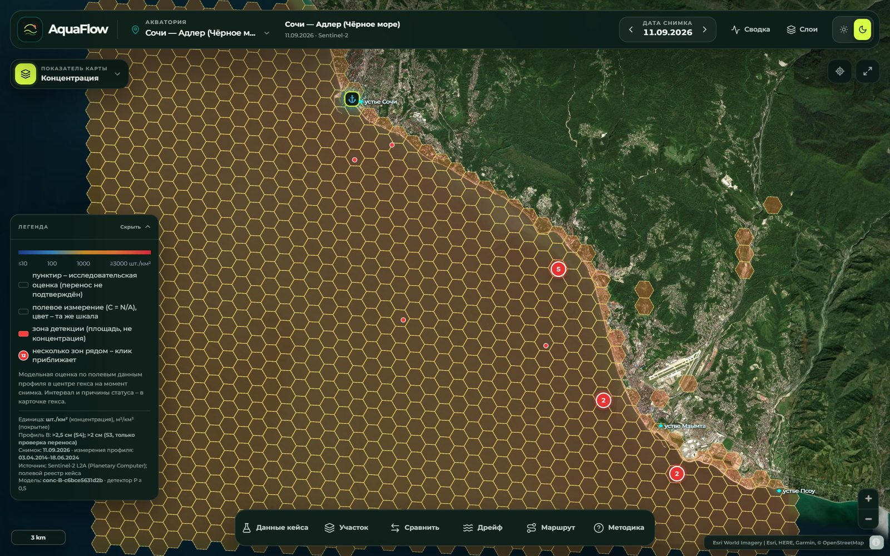
Клик по объекту на карте открывает его карточку. Карточки трёх величин устроены по-разному, чтобы их нельзя было перепутать:
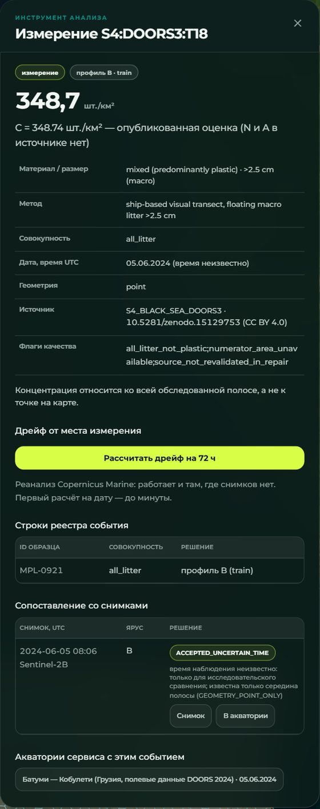
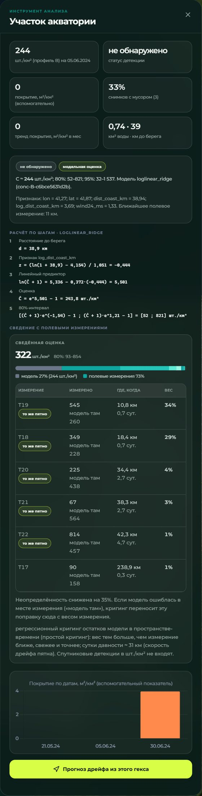
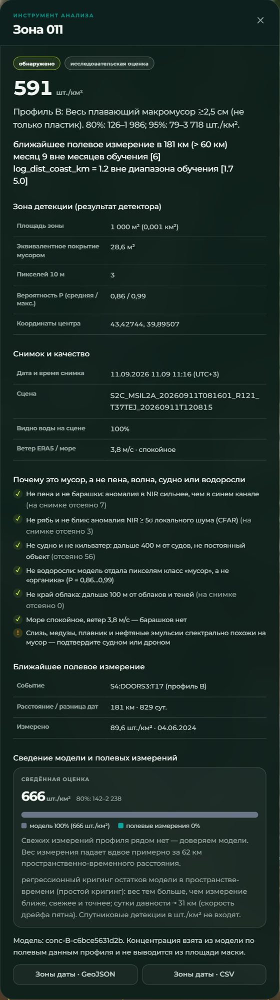
| Элемент | Что даёт |
|---|---|
| Показатель карты | 9 режимов окраски гексов: Концентрация (модель, шт./км²), Статус (обнаружено / не обнаружено / недостаточно данных), Качество (доля видимой воды), Покрытие, Среднее, Устойчивость, Тренд, Скопление (прогноз), Прогноз (покрытие через 72 ч) |
| Слои | 11 независимых слоёв: снимок Sentinel-2, детекции мусора, классы модели, маска качества, зоны детекции, полевые измерения, отдельные предметы, аналитическая сетка H3, спутниковая подложка, течения, ветер |
| Легенда | шкала и подписи текущего режима, легенда включённых масок; внизу — единица, размерный класс профиля, дата снимка, период измерений профиля, источник, версия модели, порог детектора |
| Фильтры | по статусу детекции и статусу концентрации («Сводка»); по дате — переключение снимков стрелками или кликом по графику; в API — date_from/date_to у /api/zones и /api/field |
| Инструменты | Данные кейса (источники S1–S4 и снимки на даты измерений), Участок (история гекса), Сравнить (два участка), Дрейф, Маршрут, Методика (формулы, проверка, реестр данных) |
| Выгрузка | Отчёт PDF, Зоны GeoJSON/CSV, Гексы GeoJSON/CSV, Сохранить / Повторить запрос |
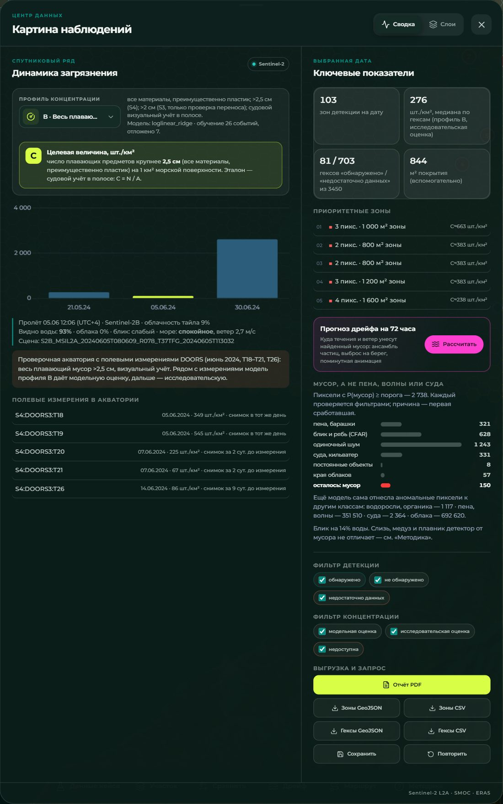
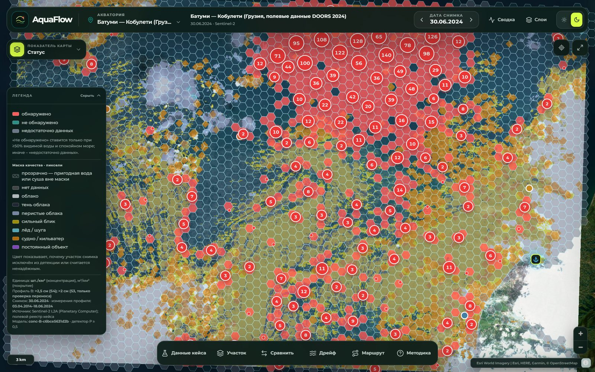
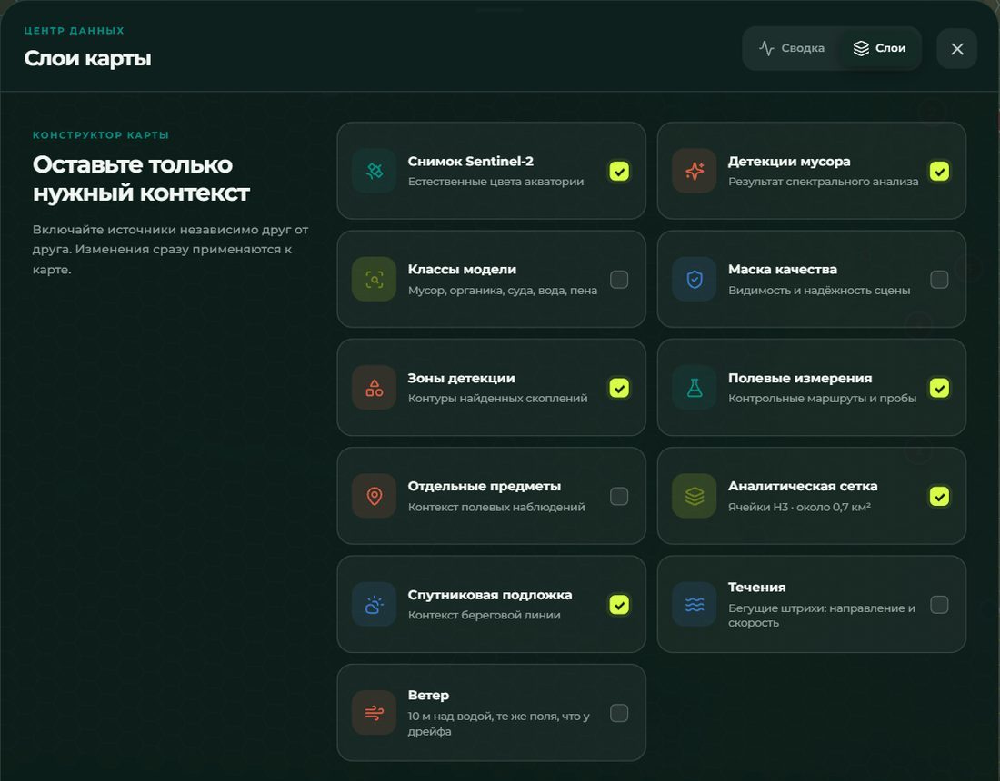
«Данные кейса» (рис. 11) — источники S1–S4 из постановки. По каждому: период наблюдений, число событий и строк реестра, сколько измерений показано на карте и в каком профиле, какие снимки нашлись на даты измерений и почему их нет (открытый океан, до запуска Sentinel-2A, только Landsat), ссылки на акватории со снимками в дни измерений.
«Методика» (рис. 12) — три вкладки:
Панель строится из того же ответа GET /api/methodology, что и раздел методики в PDF-отчёте; тест test_methodology_in_ui_uses_served_models сверяет коэффициенты с файлами моделей.
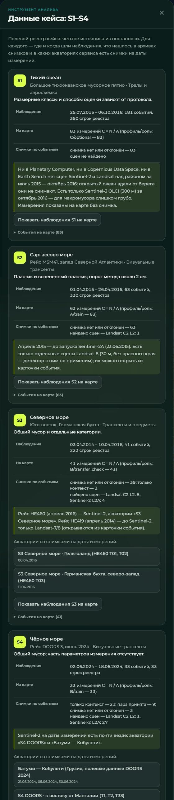
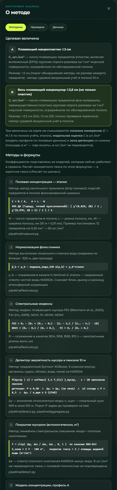
37 ручек; интерфейс пользуется теми же ручками. Интерактивная документация — /api/docs (Swagger) и /api/redoc, схема OpenAPI 3.1 — /api/openapi.json, справочник с примерами — docs/api.md. Авторизации нет; данные меняет только POST /api/queries.
| Группа | Ручки |
|---|---|
| Служебное | /api/health, /api/statuses, /api/datasets, /api/methodology, /api/metrics |
| Акватории и снимки | /api/aois, /api/aois/{aoi}, …/scenes, …/hexes, …/series, …/grid, …/{date}/model-classes |
| Детекции | /api/aois/{aoi}/{date}/zones, …/points, …/separation, /api/zones (все скопления одним JSON с фильтрами) |
| Концентрация | /api/profiles, /api/aois/{aoi}/concentration, …/{date}/hex/{i}, /api/fusion |
| Полевые данные и пары | /api/field, /api/field/objects, /api/field/sources, /api/field/{event_id}, /api/pairs |
| Дрейф и маршрут | …/{date}/drift, …/drift_point, /api/drift, …/flow, /api/flow, …/accumulation, …/route |
| Выгрузка и запросы | /api/export, /api/report, POST /api/queries, /api/queries/{qid}, POST /api/queries/{qid}/rerun |
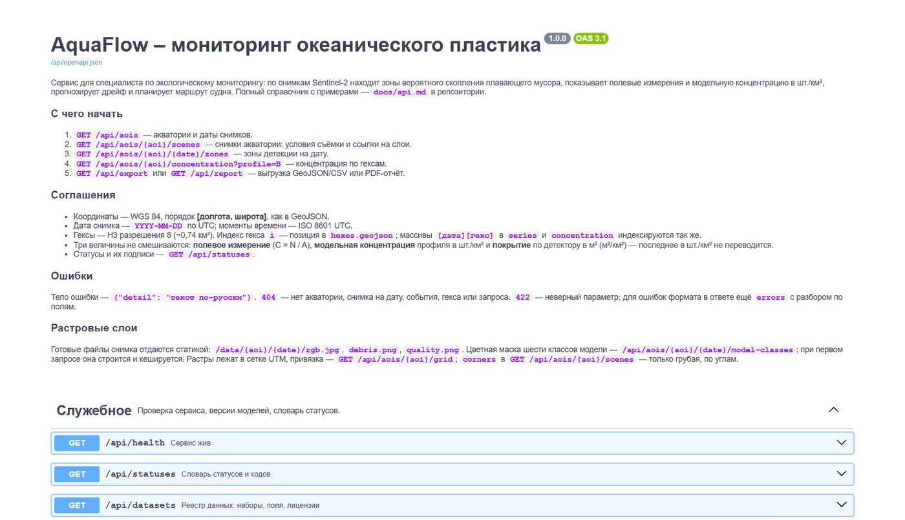
/api/docs: у каждой ручки — назначение, параметры с примерами, схема ответа и коды ошибок (тест test_every_endpoint_documented).GET /api/export?aoi=&date=&profile=&layer=zones|hexes&format=geojson|csv. Колонки CSV и атрибуты GeoJSON одинаковые (приложение Г); у зоны — площадь и покрытие отдельно от концентрации, профиль, размерный класс, единица, интервалы, статус и его причины, версия модели, условия съёмки, ближайшее измерение. В GeoJSON дополнительно meta: параметры, единица, версии конфигов и моделей. CSV — UTF-8 с BOM, открывается в Excel.X-Result-SHA256.POST /api/queries: id — первые 12 символов sha256 параметров; сохраняются параметры, sha256 результата, версии конфигов и моделей. POST /api/queries/{id}/rerun строит выгрузку заново и возвращает match, а при расхождении — сохранённые и текущие версии, чтобы было видно, что изменилось. Ссылка с &q=<id> открывает запрос в интерфейсе.GET /api/report: обзорная карта с районами скопления, фрагменты снимка и таблица крупнейших зон с координатами и ориентирами, графики динамики, распределение концентрации, отбраковка похожих объектов, прогноз дрейфа, методика с коэффициентами моделей.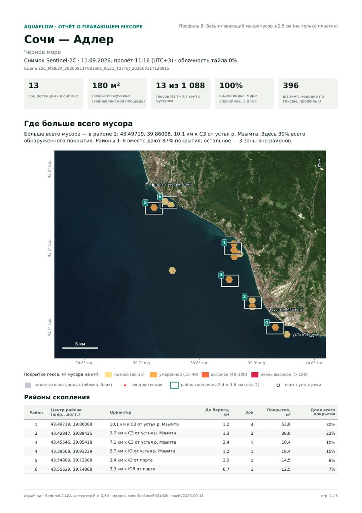
Интерфейс, выгрузка и отчёт читают одни и те же файлы data/web/, поэтому числа, единицы, геометрия и статусы в них совпадают. Это проверяют тесты:
test_export_matches_zones_and_units — CSV совпадает с зонами на карте: те же зоны, концентрация, статус, единица «шт./км²»;test_zones_consistent_with_series — число зон и пикселей совпадает со сводкой ряда;test_separation_matches_published_detections — кандидаты = отбраковано + осталось, осталось = детекции снимка;test_raster_grid_matches_corners — растры снимка не сдвинуты относительно зон и гексов.| Код | Когда |
|---|---|
| 200 | успех; пустой результат — пустой массив или коллекция |
| 404 | нет акватории, снимка на дату, гекса, события, запроса |
| 422 | неверный параметр; в ответе errors — разбор по полям |
| 503 | Open-Meteo или Copernicus Marine не ответили; заголовок Retry-After |
Текст ошибки — по-русски, его можно показывать пользователю: {"detail": "нет обработанного снимка sochi на 2000-01-01"}. tests/test_robustness.py прогоняет мусорные входы по всем ручкам: ни одна не отвечает 500.
Все прогнозы на карте подписаны «Прогноз, не наблюдение» и рисуются отдельным цветом (пурпурные частицы, пунктир маршрута), чтобы их нельзя было спутать с детекциями и измерениями.
Потребность: судно выходит через несколько часов после пролёта — нужно знать, куда сместится найденное скопление. Метод (pipeline/drift.py): лагранжев ансамбль, скорость частицы = течение + windage × ветер + случайное блуждание. Течения — Meteo-France SMOC через Open-Meteo Marine (суммарные поверхностные с приливом и стоксовым дрейфом, 1/12°, ежечасно); ветер — ERA5, а за последние 6 суток — прогноз Open-Meteo. Windage 2% для моря (3% для водохранилищ, где течений нет — там дрейф только ветровой), в ансамбле — от 1% до 3%; 4 частицы на пиксель детекции; частицы, дошедшие до берега, выбрасываются. Поля кешируются в data/processed/<aoi>/<date>/met.npz.
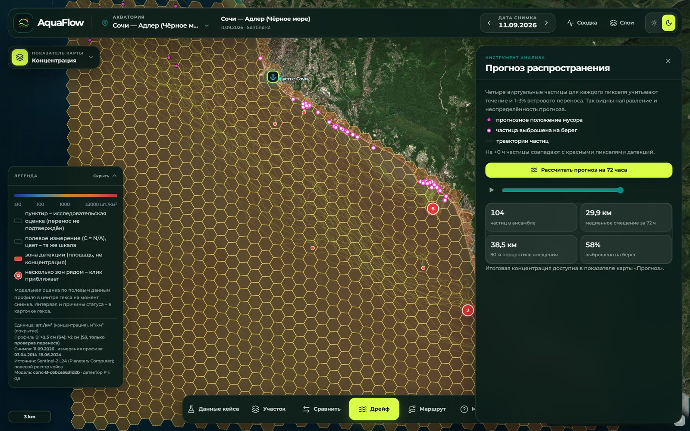
Проверка без будущих данных (python -m pipeline.drift_check, data/eval/drift_check.json). Частицы засеваются детекциями дня d и сравниваются с детекциями дня d+1…d+2, которые в прогнозе не участвуют. 7 пар (Сочи, Амурский залив, Новороссийск; горизонт 24–48 ч): медианное расстояние от новых детекций до частиц прогноза — 3,0 км, до исходного положения детекций — 1,4 км; прогноз ближе в 2 парах из 7. Вывод: у берега на 1–2 суток прогноз по течениям не лучше предположения «пятно на месте» — повторяющиеся детекции привязаны к месту (устья рек, береговые скопления). До калибровки парусности прогноз справочный.
Для полевых событий 2014–2016 гг. в Тихом океане, Саргассовом и Северном морях снимков Sentinel-2 нет, а течения Open-Meteo начинаются с 2022 г. Поэтому подключены реанализы Copernicus Marine (pipeline/cmems.py): GLORYS12 (1/12°, среднесуточные) в открытом океане, NWS (~7 км, ежечасно, с приливом) на шельфе Северного моря, стоксов дрейф волн (0,2°), ветер L4 (0,125°). Кнопка «Рассчитать дрейф на 72 ч» в карточке полевого измерения, GET /api/drift. Нужен бесплатный аккаунт Copernicus Marine в .env; без него ручка честно отвечает 503, остальное работает.
Потребность: куда отправить судно для подтверждения. Метод (pipeline/route.py): цели — скопления детекций по гексам; судно выходит из порта через заданное время, поэтому точки берутся из прогноза дрейфа на момент прибытия; следующая точка выбирается жадно по «ценность / время» (задача ориентирования). Параметры: число точек, скорость в узлах, задержка выхода.
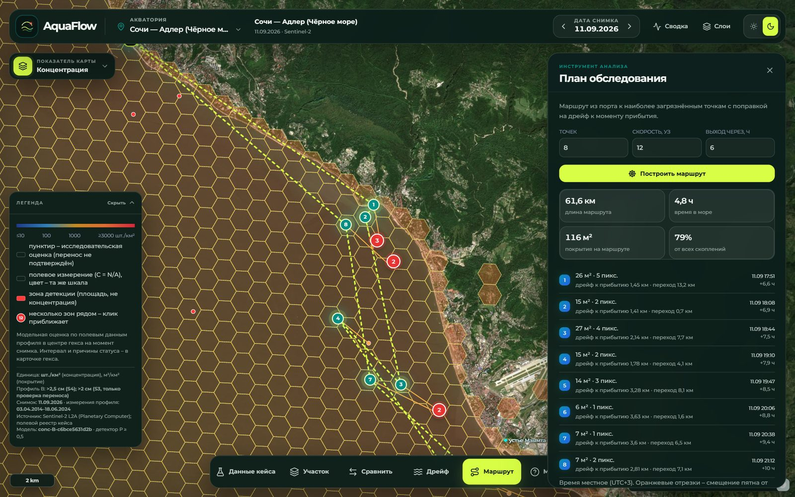
| Функция | Зачем и как работает |
|---|---|
| Скопление течениями | Акватория равномерно засевается частицами (шаг 600 м), за 72 ч считается, во сколько раз выросла их плотность, — где течения собирают мусор. Режим «Скопление», …/accumulation. |
| Анализ во времени | «Среднее» (по безоблачным и нештормовым снимкам), «Устойчивость» (доля снимков с мусором — места хронического скопления), «Тренд» (наклон покрытия в м²/км² в месяц); в карточке участка — ряд по датам. |
| Сравнение участков | Обвести два участка на карте: площадь, число зон, концентрация модели, покрытие, среднее, доля снимков с мусором, устойчивые гексы, тренд. |
| Сведение с измерениями | Раздел 6.9: рядом с полевым измерением оценка опирается на него; для профиля B MAE на отложенной выборке 231 → 185. |
| PDF-отчёт | Раздел 7.4: документ для экипажа с координатами и ориентирами крупнейших зон. |
| Классы модели и разбор отбраковки | Раздел 5.8 и рис. 3: что модель видит до порога и сколько кандидатов отсеял каждый фильтр — для проверки специалистом, мусор ли это. |
Готовые результаты обработки всех акваторий, модели и метрики лежат в репозитории, поэтому скачивать снимки и обучать модели для запуска не нужно. Нужен интернет: течения и ветер для дрейфа приходят из Open-Meteo, подложка — от Esri.
git clone https://github.com/Serfetto/kosmofinal && cd kosmofinal cp .env.example .env # необязательно: только для дрейфа без снимка docker compose up -d --build # → http://localhost:8000 curl localhost:8000/api/health
python -m venv .venv && .venv\Scripts\activate # Linux/macOS: source .venv/bin/activate pip install -r requirements.lock # точные версии пакетов cd frontend && npm ci && npm run build && cd .. python -m uvicorn backend.app:app --port 8000
На сервере добавьте --host 0.0.0.0. Если data/ только для чтения, задайте каталог кеша в AQUAFLOW_CACHE. В Windows с кириллицей в консоли — $env:PYTHONIOENCODING="utf-8".
Переменная .env | Зачем | Если не задана |
|---|---|---|
COPERNICUSMARINE_SERVICE_USERNAME, …_PASSWORD | дрейф без снимка по реанализам | GET /api/drift отвечает 503 |
AQUAFLOW_CACHE | отдельный каталог кеша | кеш пишется в data/ (в Docker — /app/cache) |
# секунды, без датасетов: sha256 весов, выборок, эталонов и предсказаний; # P/R/F1/IoU и MAE/RMSE/лог-ошибка с 95% ДИ заново из сохранённых файлов python -m pipeline.verify # сквозной пересчёт ~5 мин; --offline — реестр пар из кеша, без сети python -m pipeline.reproduce # 125 проверок (83 тестовые функции) python -m pytest -q
pipeline.reproduce по шагам: полевой реестр → реестр пар → разбиение → концентрация (CV, вложенная CV, отложенная, перенос) → сведение → детектор на MARIDA test (если MARIDA скачана) → MADOS (если скачан) → реестр данных → docs/summary.md → манифест sha256 и сверка метрик с предсказаниями.
# MARIDA: zenodo.org/records/5151941 → data/raw/marida # MADOS: zenodo.org/records/10664073 → data/raw/MADOS.zip (не распаковывать) python -m pipeline.train # обучение детектора python -m pipeline.build run # снимки → детекция → карты (~17 ГБ) python -m pipeline.eval_detector # MARIDA test: базовые и основной python -m pipeline.eval_detector_mados python -m pipeline.eval_detector_lro # регион вне обучения (~10 мин, GPU) python -m pipeline.pairs transfer # детекции в следе ↔ полевая плотность python -m pipeline.drift_check # дрейф на парах соседних снимков
| Задача | Время | Память | Прочее |
|---|---|---|---|
| Сервис на готовых данных | — | ~1 ГБ RAM | интернет для дрейфа и подложки |
pipeline.verify | секунды | <1 ГБ | без сети и датасетов |
pipeline.reproduce | ~5 мин на CPU | 4 ГБ RAM | MARIDA — по желанию |
| Полный пересчёт снимков | ~45 мин на GPU | 16 ГБ RAM | ~17 ГБ снимков; GPU с CUDA ускоряет XGBoost, но не обязателен |
| Файл | Что проверяет |
|---|---|
test_measure.py | контрольные примеры постановки (60 шт./км², ошибка 15), площадь полосы, реальные строки, ДИ Гарвуда, ΣN/ΣA, MAE/RMSE/MedAE, лог-ошибка, групповой бутстреп |
test_field.py | контракт реестра (935/56/318), пустое ≠ 0, решение по каждой строке, совокупности не смешаны, полночь, дата без времени, N/A, площадь прерванных трансект |
test_leakage.py | запрещённые признаки, группы не пересекают отложенную выборку и фолды, модель сервиса без отложенных событий, порог детектора задан до test, MADOS — внешняя проверка |
test_metrics.py | метрики пересчитываются из сохранённых предсказаний, основная и базовые на одних событиях, вложенная CV выбирает признаки заново |
test_mados.py | сведение классов MADOS, MARIDA внутри MADOS, обучение без test и повторов |
test_fusion.py | сведение: без соседей — ровно модель, свежее измерение доминирует, вес падает с расстоянием и давностью, параметры без отложенной выборки; методика в интерфейсе из моделей сервиса; реестр данных |
test_cmems.py | выбор продукта Copernicus Marine, кеш, даты вне реанализа, чтение .env |
test_api.py, test_robustness.py | ошибки 404/422/503, пустые выборки, выгрузка = зоны, одинаковые байты, повтор запроса, документация каждой ручки, привязка растров, мусорный ввод без 500 |
Сеть тестам не нужна: загрузки подменяются. Один тест пропускается, если в data/raw нет архива MADOS.
requirements.lock — точные версии пакетов; requirements.txt — минимальные.meta: время, git-коммит, хеши конфигов, версия Python и пакетов (pipeline/provenance.py).data/models/MANIFEST.json — sha256 и размер весов, разбиений, эталонов, реестров и предсказаний; pipeline.verify сверяет их и завершается с кодом 1 при расхождении.GET /api/health возвращает хеши конфигов и версии моделей, которые сейчас работают в сервисе; они же пишутся в сохранённые запросы и meta выгрузки.configs/concentration.yaml (validated_radius_km) заранее, до проверки. Для сравнения: остатки модели коррелируют на расстояниях порядка 89–158 км (вариограмма сведения), так что 60 км — консервативная граница. Кроме расстояния, проверяются сезон и диапазон признаков.docs/mados.md.test_leakage.py и test_metrics.py.python -m pipeline.verify пересчитывает P/R/F1/IoU из сохранённых предсказаний pred_test.npz и эталона ref_test.npz, а MAE — из *_predictions.csv, и сверяет sha256 файлов.python -m pipeline.build add <id> "<название>" lon0 lat0 lon1 lat1 --port lon,lat --tz 3, затем python -m pipeline.build run <id>: скачивание снимков, детекция, карты.kosmofinal/ ├── backend/ FastAPI: app.py — карта, слои, дрейф, маршрут; case_api.py — профили, поле, │ зоны, выгрузка, запросы, метрики; methodology.py; report.py (PDF); schemas.py ├── pipeline/ расчёт, обучение, проверка: python -m pipeline.<модуль> │ ├── s2, download, features, detect, aggregate, build, class_layer — снимки, детекция │ ├── field, measure, pairs, splits, covariates — полевые данные, реестр пар │ ├── train, concentration, fusion, mados — модели │ ├── drift, cmems, route — дрейф и маршрут │ ├── eval_detector*, drift_check, review, verify, reproduce — проверка │ └── config, status, provenance, datasets — общее ├── frontend/ React + TypeScript, MapLibre GL, Chart.js, Tailwind (Vite) ├── configs/ profiles, concentration, detector, pairs, datasets (.yaml) ├── data/ web, models, field, registry, splits, eval, processed, queries ├── docs/ report, summary, models, data, datasets, mados, api, tests, slides, │ techdoc/ (исходник этого документа), AquaFlow_TechDoc.pdf ├── tests/ pytest: 83 тестовые функции └── Dockerfile, docker-compose.yml, requirements.txt, requirements.lock, .env.example
| Код | Решение | Смысл |
|---|---|---|
ACCEPTED | принято | сдвиг ≤ 3 ч при известном времени, чистая вода |
ACCEPTED_UNCERTAIN_TIME | принято | тот же день, время наблюдения неизвестно — только исследование |
NO_SCENE | отклонено | нет сцен Sentinel-2 L2A в окне ±1 сут. |
SENSOR_UNSUPPORTED | отклонено | есть только Landsat — детектору нужен красный край |
UNRELIABLE_SYNC | контекст | сдвиг больше 18 ч |
INSUFFICIENT_COVERAGE | отклонено | след покрыт данными сцены меньше чем на 90% |
UNUSABLE_PIXELS | отклонено | чистой воды по SCL в следе меньше 50% |
GLINT | отклонено | медиана B11 по воде выше 0,03 — сильный блик |
DUPLICATE_BETTER_SCENE | отклонено | для события есть сцена лучше |
| Детекция | Код |
|---|---|
обнаружено (detected) | 1 |
не обнаружено (not_detected) | 0 |
недостаточно данных (insufficient_data) | 2 |
| Концентрация | Код |
|---|---|
модельная оценка (model_estimate) | 1 |
исследовательская оценка (research_estimate) | 2 |
концентрация недоступна (unavailable) | 0 |
Маска качества: 0 пригоден · 1 суша / вне маски воды · 2 нет данных · 3 облако · 4 тень облака · 5 перистые облака · 6 сильный блик · 7 лёд / шуга · 8 судно / кильватер · 9 постоянный объект. Полевое измерение имеет value_type = measurement. Тот же словарь отдаёт GET /api/statuses.
Зоны (layer=zones): zone_id, aoi, date, scene_id, scene_datetime_utc, lon, lat, h3, zone_area_km2, n_pixels, cover_m2, cover_m2_km2, p_mean, p_max, detection_status(_ru), profile, profile_label, size_class, unit, conc_items_km2, conc_lo80, conc_hi80, conc_lo95, conc_hi95, conc_status(_ru), conc_reasons, model_version, valid_frac_scene, wind_ms, sea, field_event_id, field_profile, field_date, field_distance_km, field_date_gap_days, field_conc_items_km2.
Гексы (layer=hexes): aoi, date, scene_id, h3, hex_index, lon, lat, water_km2, valid_frac, detection_status(_ru), n_det_px, cover_m2_km2, profile, unit, conc_items_km2, conc_lo80, conc_hi80, conc_status(_ru), model_version.
| Профиль | зафиксированное определение целевой величины: материал, порог размера, метод учёта, единица, бассейн |
| Событие | event_id — одна трансекта или трал; строки одного события зависимы |
| След события | обследованная площадь: полоса учёта, сегменты или точка с радиусом неопределённости, плюс дрейфовый буфер |
| Зона детекции | связная группа пикселей 10 м, где детектор нашёл вероятное скопление мусора |
| Гекс | ячейка H3 разрешения 8, ~0,74 км², — аналитическая сетка карты |
| Покрытие | эквивалентная площадь мусора по долям пикселей, м² и м²/км² |
| Отложенная выборка | ~20% групп событий, не участвовавших ни в обучении, ни в выборе модели |
| Вложенная CV | кросс-валидация, где выбор признаков повторяется внутри каждого внешнего фолда |
| Сведение | регрессионный кригинг остатков: поправка модели по соседним полевым измерениям с весами по расстоянию и давности |
| CFAR | постоянный уровень ложных тревог: порог аномалии, пропорциональный локальному шуму |
| FDI, FAI, PI, NDVI, NDWI, NDMI | спектральные индексы плавающего мусора, водорослей, пластика, растительности, воды и влажности |